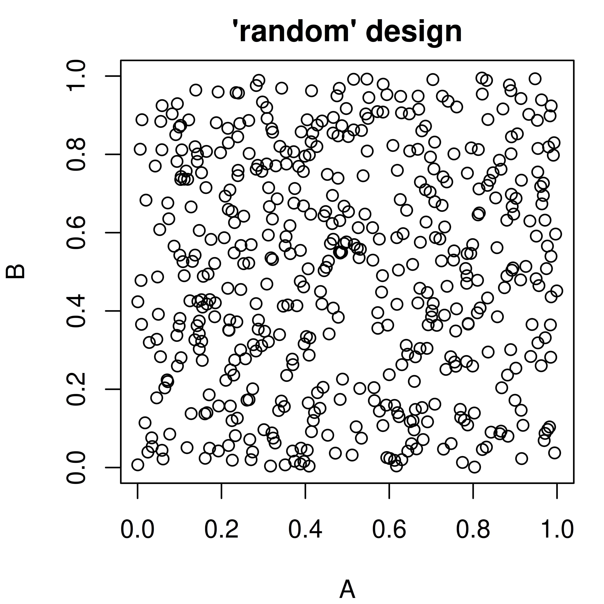
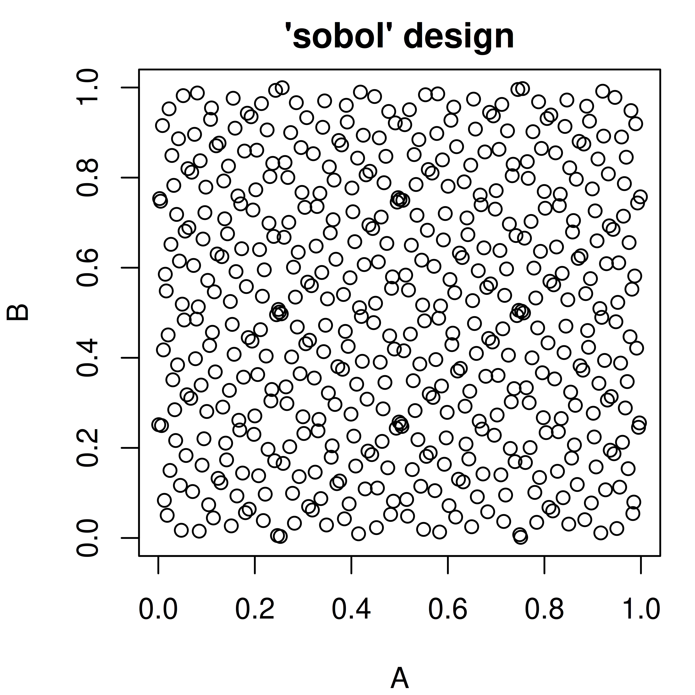
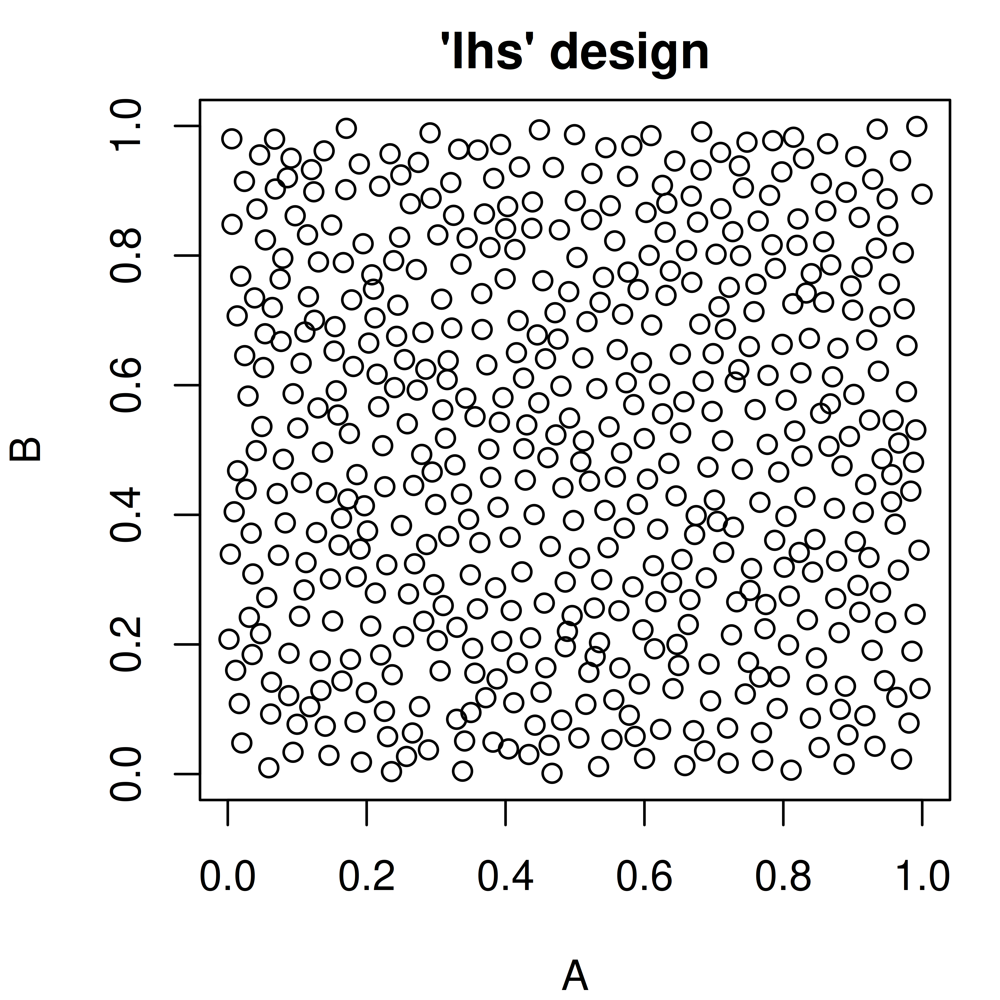

<ParamSet(1)>
id class lower upper nlevels default value
1: a ParamInt -Inf Inf Inf <NoDefault[0]> 116 Advanced Hyperparameter Specification using paradox
Martin Binder
Ludwig-Maximilians-Universität München, and Munich Center for Machine Learning (MCML)
Sebastian Fischer
Ludwig-Maximilians-Universität München, and Munich Center for Machine Learning (MCML)
Michel Lang
Research Center Trustworthy Data Science and Security, and TU Dortmund University
Alexander Winterstetter
Ludwig-Maximilians-Universität München
In previous chapters, we have already outlined how hyperparameters can be set manually (Section 2.2.3) or optimized automatically (Chapter 4).
In this chapter, we will introduce the paradox package, which offers a language for the description of parameter spaces, as well as tools for useful operations on these parameter spaces. A parameter space is often useful when describing:
- A set of sensible input values for an R function
- The set of possible values that fields of a configuration object can take
- The search space of an optimization process
The tools provided by paradox therefore relate to:
- Parameter checking: Verifying that a set of parameters satisfies the conditions of a parameter space
- Parameter sampling: Generating parameter values that lie in the parameter space for systematic exploration of program behavior depending on these parameters
paradox is, by nature, an auxiliary package that derives its usefulness from other packages that make use of it. It is heavily utilized in other packages of the mlr3 ecosystem such as mlr3, mlr3pipelines, mlr3tuning, and miesmuschel.
16.1 Reference Based Objects
It is important to know that some objects created in paradox are “reference-based”, unlike most other objects in R. When a change is made to a ParamSet object, for example by changing the $values field, all variables that point to this parameter set will contain the changed object. To create an independent copy of a parameter set, the $clone(deep = TRUE) method needs to be used:
At this point, ps1, ps2, and ps3 all contain the same values. Now we change the value of a in ps1:
ps1$values$a = 2
print(ps1)<ParamSet(1)>
id class lower upper nlevels default value
1: a ParamInt -Inf Inf Inf <NoDefault[0]> 2print(ps2)<ParamSet(1)>
id class lower upper nlevels default value
1: a ParamInt -Inf Inf Inf <NoDefault[0]> 2print(ps3)<ParamSet(1)>
id class lower upper nlevels default value
1: a ParamInt -Inf Inf Inf <NoDefault[0]> 1Because ps2 holds the same reference as ps1, the change is reflected in ps2 as well. However, ps3 is an independent clone of the original ps1 and still has a set to 1.
16.2 Defining a Parameter Space
16.2.1 Domain Representing Single Parameters
Parameter spaces are made up of individual parameters, which usually can take a single atomic value. Consider, for example, trying to configure the rpart package’s rpart::rpart.control() object. It has various components (minsplit, cp, …) that all take a single value.
These components are represented by Domain objects, which can be created using the sugar functions in Table 16.1.
Domain Constructors and their resulting Domain.
A ParamSet that represents a given set of parameters is created by calling ps() with named arguments that are Domain objects. While domain objects themselves are R objects that can in principle be handled and manipulated, they should not be changed after construction.
library("paradox")
param_set = ps(
parA = p_lgl(init = FALSE),
parB = p_int(lower = 0, upper = 10, tags = c("tag1", "tag2")),
parC = p_dbl(lower = 0, upper = 4, special_vals = list(NULL)),
parD = p_fct(levels = c("x", "y", "z"), default = "y"),
parE = p_uty(custom_check = function(x) checkmate::checkFunction(x))
)
param_set<ParamSet(5)>
id class lower upper nlevels default value
1: parA ParamLgl NA NA 2 <NoDefault[0]> FALSE
2: parB ParamInt 0 10 11 <NoDefault[0]> [NULL]
3: parC ParamDbl 0 4 Inf <NoDefault[0]> [NULL]
4: parD ParamFct NA NA 3 y [NULL]
5: parE ParamUty NA NA Inf <NoDefault[0]> [NULL]Every parameter can have:
- default - A default value, indicating the behavior of something if the specific value is not given.
-
init - An initial value, which is set in
$valueswhen theParamSetis created. Note, that this is not the same asdefault:defaultis used when a parameter is not present in$values, whileinitis the value that is set upon creation. - special_vals - A list of values that are accepted even if they do not conform to the type.
- tags - Tags that can be used to organize parameters.
-
trafo - A transformation function that is applied to the parameter value after it has been sampled. It is for example used through the
Design$transpose()function after aDesignwas created bygenerate_design_random()or similar functions.
The numeric (p_int() and p_dbl()) parameters furthermore allow for specification of a lower and upper bound. Meanwhile, the p_fct() parameter must be given a vector of levels that define the possible states its parameter can take. The p_uty() parameter can also have a custom_check function that must return TRUE when a value is acceptable and may return a character(1) error description otherwise. The example above defines parE as a parameter that only accepts functions.
All values which are given to the constructor are then accessible from the ParamSet for inspection using $. The parameter set should be considered immutable, except for some fields such as $values, $deps, $tags. Bounds and levels should not be changed after construction. Instead, a new ParamSet should be constructed.
Besides the possible values that can be given to a constructor, there are also the $class, $nlevels, $is_bounded, $has_default, $storage_type, $is_number and $is_categ fields that give information about a parameter.
A list of all fields can be found in ?ParamSet.
param_set$lowerparA parB parC parD parE
NA 0 0 NA NA param_set$levels$parD[1] "x" "y" "z"param_set$class parA parB parC parD parE
"ParamLgl" "ParamInt" "ParamDbl" "ParamFct" "ParamUty" 16.2.1.1 Type / Range Checking
The ParamSet object offers the possibility to check whether a value satisfies its condition, i.e. is of the right type, and also falls within the range of allowed values, using the $test(), $check(), and $assert() functions. Their argument must be a named list with values that are checked against the respective parameters, and it is possible to check only a subset of parameters. $test() should be used within conditional checks and returns TRUE or FALSE, while $check() returns an error description when a value does not conform to the parameter (and thus plays well with the assert()-function). $assert() will throw an error whenever a value does not fit.
16.2.2 Parameter Sets
The ordered collection of parameters is handled in a ParamSet. It is typically created by calling ps(), but can also be initialized using the ParamSet$new() function. The main difference is that ps() takes named arguments, whereas ParamSet$new() takes a named list. The latter makes it easier to construct a parameter set programmatically, but is slightly more verbose.
ParamSets can be combined using c() or ps_union() (the latter of which takes a list), and they have a $subset() method that allows for subsetting. All of these functions return a new, cloned parameter set-object, and do not modify the original parameter set.
ps1 = ParamSet$new(list(x = p_int(), y = p_dbl()))
ps2 = ParamSet$new(list(z = p_fct(levels = c("a", "b", "c"))))
ps_all = c(ps1, ps2)
print(ps_all)<ParamSet(3)>
id class lower upper nlevels default value
1: x ParamInt -Inf Inf Inf <NoDefault[0]> [NULL]
2: y ParamDbl -Inf Inf Inf <NoDefault[0]> [NULL]
3: z ParamFct NA NA 3 <NoDefault[0]> [NULL]ps_all$subset(c("x", "z"))<ParamSet(2)>
id class lower upper nlevels default value
1: x ParamInt -Inf Inf Inf <NoDefault[0]> [NULL]
2: z ParamFct NA NA 3 <NoDefault[0]> [NULL]ParamSets of each individual parameters can be accessed through the $subspaces() function by returning a named list of single-parameter ParamSetss.
It is possible to get the ParamSet as a data.table using as.data.table(). This makes it easy to subset parameters on certain conditions and aggregate information about them, using the variety of methods provided by data.table.
as.data.table(ps_all) id class lower upper levels nlevels is_bounded special_vals
1: x ParamInt -Inf Inf [NULL] Inf FALSE <list[0]>
2: y ParamDbl -Inf Inf [NULL] Inf FALSE <list[0]>
3: z ParamFct NA NA a,b,c 3 TRUE <list[0]>
3 variables not shown: [default, storage_type, tags]
16.2.2.1 Values in a ParamSet
Although a ParamSet fundamentally represents a value space, it also has a field $values that can contain a point within that space. This is useful because many things that define a parameter space need similar operations (like parameter checking) that can be simplified. The $values field contains a named list that is always checked against parameter constraints. When trying to set parameter values, e.g. for mlr3 Learners, it is the $values field of its $param_set that needs to be used.
The parameter constraints are automatically checked:
ps1$values$x = 1.5Error in `self$assert()`:
! Assertion on 'xs' failed: x: Must be of type 'single integerish value', not 'double'.To set multiple values at once we recommend using $set_values(), which updates the given hyperparameters (argument names) with the respective values.
ps1$set_values(x = 2, y = 3)
print(ps1$values)$x
[1] 2
$y
[1] 316.2.2.2 Dependencies
It is often the case that certain parameters are irrelevant or should not be given depending on values of other parameters. An example would be a parameter that switches a certain algorithm feature (for example regularization) on or off, combined with another parameter that controls the behavior of that feature (e.g. a regularization parameter). The second parameter would be said to depend on the first parameter having the value TRUE.
A dependency can be added using the $add_dep method, which takes both the ids of the “depender” and “dependee” parameters as well as a Condition object. The Condition object represents the check to be performed on the “dependee”. Currently it can be created using CondEqual() and CondAnyOf(). Multiple dependencies can be added, and parameters that depend on others can again be depended on, as long as no cyclic dependencies are introduced.
The consequences of dependencies are twofold: For one, the $check(), $test(), and $assert() functions will reject any value supplied for a parameter if its dependency is not satisfied, when the check_strict argument is given as TRUE. This differs from simply omitting the parameter, which is always allowed. Furthermore, when sampling or creating grid designs from a ParamSet, the dependencies will be respected.
The easiest way to set dependencies is to give the depends argument to the Domain constructor.
The following example makes parameter D depend on parameter A being FALSE, and parameter B depend on parameter D being one of "x" or "y". This introduces an implicit dependency of B on A being FALSE as well, because D does not take any value if A is TRUE.
Note that the depends argument is limited to operators == and %in%, so D = p_fct(..., depends = !A) would not work.
All dependencies are met, so the check passes:
p$check(list(A = FALSE, D = "x", B = 1), check_strict = TRUE)[1] TRUEB’s dependency on D %in% c("x", "y") is not met because D is "z":
p$check(list(A = FALSE, D = "z", B = 1), check_strict = TRUE)[1] "B: can only be set if the following condition is met 'D %in% {x, y}'. Instead the current parameter value is: D == z"B’s dependency is not met because D is absent:
p$check(list(A = FALSE, B = 1), check_strict = TRUE)[1] "B: can only be set if the following condition is met 'D %in% {x, y}'. Instead the parameter value for 'D' is not set at all. Try setting 'D' to a value that satisfies the condition"B is absent, so its dependency does not apply:
p$check(list(A = FALSE, D = "z"), check_strict = TRUE)[1] TRUENeither B nor D are present, so no dependencies are violated:
p$check(list(A = TRUE), check_strict = TRUE)[1] TRUED’s dependency on A == FALSE is not met:
p$check(list(A = TRUE, D = "x", B = 1), check_strict = TRUE)[1] "D: can only be set if the following condition is met 'A == FALSE'. Instead the current parameter value is: A == TRUE"B’s dependency is not met because D is not present (and cannot be, since A is TRUE):
p$check(list(A = TRUE, B = 1), check_strict = TRUE)[1] "B: can only be set if the following condition is met 'D %in% {x, y}'. Instead the parameter value for 'D' is not set at all. Try setting 'D' to a value that satisfies the condition"Internally, the dependencies are represented as a data.table, which can be accessed listed in the $deps field. This data.table can even be mutated, to e.g. remove dependencies. There are no sanity checks done when the $deps field is changed this way. Therefore it is advised to be cautious.
p$deps id on cond
1: B D <Condition:CondAnyOf>
2: D A <Condition:CondEqual>16.2.3 Vector Parameters
There are no vectorial parameters in paradox. Instead, it is now possible to create multiple copies of a single parameter using the ps_replicate() function. This creates a ParamSet consisting of multiple copies of the parameter, which can then (optionally) be added to another ParamSet.
ps2d = ps_replicate(ps(x = p_dbl(lower = 0, upper = 1)), 2)
print(ps2d)<ParamSet(2)>
id class lower upper nlevels default value
1: rep1.x ParamDbl 0 1 Inf <NoDefault[0]> [NULL]
2: rep2.x ParamDbl 0 1 Inf <NoDefault[0]> [NULL]It is also possible to use a p_uty() to accept vectorial parameters, which also works for parameters of variable length. A ParamSet containing a p_uty() can be used for parameter checking, but not for sampling. To sample values for a method that needs a vectorial parameter, it is advised to use an $.extra_trafo transformation function that creates a vector from atomic values.
Assembling a vector from repeated parameters is aided by the parameter’s $tags: Parameters that were generated by the ps_replicate() command can be tagged as belonging to a group of repeated parameters.
ps2d = ps_replicate(ps(x = p_dbl(0, 1), y = p_int(0, 10)), 2, tag_params = TRUE)
ps2d$values = list(rep1.x = 0.2, rep2.x = 0.4, rep1.y = 3, rep2.y = 4)
ps2d$tags$rep1.x
[1] "param_x"
$rep1.y
[1] "param_y"
$rep2.x
[1] "param_x"
$rep2.y
[1] "param_y"ps2d$get_values(tags = "param_x")$rep1.x
[1] 0.2
$rep2.x
[1] 0.416.3 Parameter Sampling
It is often useful to have a list of possible parameter values that can be systematically iterated through, for example to find parameter values for which an algorithm performs particularly well (tuning). paradox offers a variety of functions that allow creating evenly-spaced parameter values in a “grid” design as well as random sampling. In the latter case, it is possible to influence the sampling distribution in more or less fine detail.
A point to always keep in mind while sampling is that only numerical and factorial parameters that are bounded can be sampled from, i.e. not p_uty(). Furthermore, for most samplers p_int() and p_dbl() must have finite lower and upper bounds.
16.3.1 Parameter Designs
Functions that sample the parameter space fundamentally return an object of the Design class. These objects contain the sampled data as a data.table under the $data field, and also offer conversion to a list of parameter-values using the $transpose() function.
16.3.2 Grid Design
The generate_design_grid() function is used to create grid designs that contain all combinations of parameter values: All possible values for p_lgl() and p_fct(), and values with a given resolution for p_int() and p_dbl(). The resolution can be given for all numeric parameters, or for specific named parameters through the param_resolutions parameter.
ps_small = ps(A = p_dbl(0, 1), B = p_dbl(0, 1))
design = generate_design_grid(ps_small, 2)
print(design)<Design> with 4 rows:
A B
1: 0 0
2: 0 1
3: 1 0
4: 1 1generate_design_grid(ps_small, param_resolutions = c(A = 3, B = 2))<Design> with 6 rows:
A B
1: 0.0 0
2: 0.0 1
3: 0.5 0
4: 0.5 1
5: 1.0 0
6: 1.0 116.3.3 Random Sampling
paradox offers different methods for random sampling, which vary in the degree to which they can be configured (see Figure 16.1). The easiest way to get a uniformly random sample of parameters is generate_design_random(). It is also possible to create latin hypercube sampled parameter values using generate_design_lhs(), which utilizes the lhs package. LHS-sampling creates low-discrepancy sampled values that cover the parameter space more evenly than purely random values. generate_design_sobol() can be used to sample using the Sobol sequence.
pvrand = generate_design_random(ps_small, 500)
pvlhs = generate_design_lhs(ps_small, 500)
pvsobol = generate_design_sobol(ps_small, 500)



16.3.4 Generalized Sampling: The Sampler Class
It may sometimes be desirable to configure parameter sampling in more detail. paradox uses the Sampler abstract base class for sampling, which has many different sub-classes that can be parameterized and combined to control the sampling process. It is even possible to create further sub-classes of the Sampler class (or of any of its subclasses) for even more possibilities.
Every Sampler object has a sample() function, which takes one argument, the number of instances to sample, and returns a Design object.
16.3.4.1 1D-Samplers
There is a variety of samplers that sample values for a single parameter. These are Sampler1DUnif (uniform sampling), Sampler1DCateg (sampling for categorical parameters), Sampler1DNormal (normally distributed sampling, truncated at parameter bounds), and Sampler1DRfun (arbitrary 1D sampling, given a random-function). These are initialized with a one-dimensional ParamSet, and can then be used to sample values.
sampA = Sampler1DCateg$new(ps(x = p_fct(letters)))
sampA$sample(5)<Design> with 5 rows:
x
1: b
2: d
3: b
4: d
5: a16.3.4.2 Hierarchical Sampler
The SamplerHierarchical sampler is an auxiliary sampler that combines many 1D-Samplers to get a combined distribution. Its name “hierarchical” implies that it is able to respect parameter dependencies. This suggests that parameters only get sampled when their dependencies are met.
The following example shows how this works: The Int parameter B depends on the Lgl parameter A being TRUE. A is sampled to be TRUE in about half the cases, in which case B takes a value between 0 and 10. In the cases where A is FALSE, B is set to NA.
p = ps(
A = p_lgl(),
B = p_int(0, 10, depends = A == TRUE)
)
p_subspaces = p$subspaces()
sampH = SamplerHierarchical$new(p,
list(Sampler1DCateg$new(p_subspaces$A),
Sampler1DUnif$new(p_subspaces$B))
)
sampled = sampH$sample(1000)
head(sampled$data) A B
1: FALSE NA
2: TRUE 7
3: TRUE 2
4: TRUE 9
5: TRUE 9
6: FALSE NA B
A 0 1 2 3 4 5 6 7 8 9 10 <NA>
FALSE 0 0 0 0 0 0 0 0 0 0 0 509
TRUE 48 50 37 41 54 43 39 41 40 43 55 016.3.4.3 Joint Sampler
Another way of combining samplers is the SamplerJointIndep. SamplerJointIndep also makes it possible to combine Samplers that are not 1D. However, SamplerJointIndep currently cannot handle ParamSets with dependencies.
sampJ = SamplerJointIndep$new(
list(Sampler1DUnif$new(ps(x = p_dbl(0, 1))),
Sampler1DUnif$new(ps(y = p_dbl(0, 1))))
)
sampJ$sample(5)<Design> with 5 rows:
x y
1: 0.251923 0.9271
2: 0.004932 0.6741
3: 0.047957 0.4288
4: 0.805049 0.8489
5: 0.075433 0.979716.3.4.4 SamplerUnif
The Sampler used in generate_design_random() is the SamplerUnif sampler, which corresponds to a HierarchicalSampler of Sampler1DUnif for all parameters with dependency-aware behavior identical to generate_design_random().
16.4 Parameter Transformation
While the different Samplers allow for a wide specification of parameter distributions, there are cases where the simplest way of getting a desired distribution is to sample parameters from a simple distribution (such as the uniform distribution) and then transform them. This can be done by constructing a Domain with a trafo argument, or assigning a function to the $.extra_trafo field of a ParamSet. The latter can also be done by passing an .extra_trafo argument to the ps() shorthand constructor.
A trafo function in a Domain is called with a single parameter, the value to be transformed. It can only operate on the dimension of a single parameter.
The $.extra_trafo function is called with two parameters:
- The list of parameter values to be transformed as
x. Unlike theDomain’strafo, the$.extra_trafohandles the whole parameter set and can even model “interactions” between parameters. - The
ParamSetitself asparam_set
The $.extra_trafo function must return a list of transformed parameter values.
The transformation is performed when calling the $transpose() function of the Design object returned by a Sampler with the trafo parameter set to TRUE (the default). The following, for example, creates a parameter that is exponentially distributed:
psexp = ps(par = p_dbl(0, 1, trafo = function(x) -log(x)))
design = generate_design_random(psexp, 3)
print(design)<Design> with 3 rows:
par
1: 0.1438
2: 0.5293
3: 0.3663design$transpose()[[1]]
[[1]]$par
[1] 1.939
[[2]]
[[2]]$par
[1] 0.6362
[[3]]
[[3]]$par
[1] 1.004Printing the Design shows the untransformed values between 0 and 1, while $transpose() applies the transformation by default (trafo = TRUE). Compare this to $transpose() without transformation:
design$transpose(trafo = FALSE)[[1]]
[[1]]$par
[1] 0.1438
[[2]]
[[2]]$par
[1] 0.5293
[[3]]
[[3]]$par
[1] 0.3663Another way to get this effect, using $.extra_trafo during construction, would be:
It is also possible to set $.extra_trafo after construction of the ParamSet-object.
However, when transforming parameters independently the trafo way is more recommended. .extra_trafo is more useful when transforming parameters that interact in some way, or when new parameters should be generated.
16.4.1 Transformation between Types
Usually the design created with one ParamSet is then used to configure other objects that themselves have a parameter set which defines the values they take. The parameter sets which can be used for random sampling, however, are restricted in some ways: They must have finite bounds, and they may not contain “untyped” (p_uty) parameters. $trafo provides the glue for these situations. There is relatively little constraint on the trafo function’s return value, so it is possible to return values that have different bounds or even types than the original ParamSet. It is even possible to remove some parameters and add new ones.
Suppose, for example, that a certain method requires a function as a parameter. Let’s say a function that summarizes its data in a certain way. The user can pass functions like median() or mean(), but could also pass quantiles or something completely different. This method would probably use the following ParamSet:
methodPS = ps(fun = p_uty(custom_check = function(x) checkmate::checkFunction(x, nargs = 1)))
print(methodPS)<ParamSet(1)>
id class lower upper nlevels default value
1: fun ParamUty NA NA Inf <NoDefault[0]> [NULL]If one wanted to sample this method, using one of four functions, a way to do this would be:
design = generate_design_random(samplingPS, 2)
print(design)<Design> with 2 rows:
fun
1: mean
2: meanNote that the Design only contains the column “fun” as a character column. To get a single value as a function, the $transpose() function is used.
xvals = design$transpose()
print(xvals[[1]])$fun
function (x, ...)
UseMethod("mean")
<bytecode: 0x5579ff3b0218>
<environment: namespace:base>We can now check that it fits the requirements set by methodPS, and that $fun is in fact a function:
methodPS$check(xvals[[1]])[1] TRUExvals[[1]]$fun(1:10)[1] 5.5p_fct() has a shortcut for this kind of transformation, where a character is transformed into a specific set of (typically non-scalar) values. When its levels argument is given as a named list (or named non-character vector), it constructs a Domain that does the trafo automatically. A way to perform the above would therefore be:
samplingPS = ps(
fun = p_fct(list("mean" = mean, "median" = median, "min" = min, "max" = max))
)
generate_design_random(samplingPS, 1)$transpose()[[1]]
[[1]]$fun
function (x, na.rm = FALSE, ...)
UseMethod("median")
<bytecode: 0x5579fe6f6ea0>
<environment: namespace:stats>Imagine now that a different kind of parametrization of the function is desired: The user wants to give a function that selects a certain quantile, where the quantile is set by a parameter. In that case the $transpose() function could generate a function in a different way.
For interpretability, the parameter should be called “quantile” before transformation, and the “fun” parameter is generated on the fly. We therefore use an .extra_trafo here, given as a function to the ps() call. The .extra_trafo receives the sampled quantile value (a numeric(1) between 0 and 1) and turns it into a function that computes the corresponding quantile of its input.
design = generate_design_random(samplingPS2, 2)
print(design)<Design> with 2 rows:
quantile
1: 0.9492
2: 0.4423The Design now contains the column “quantile” that will be used by the $transpose() function to create the fun parameter. We also check that it fits the requirement set by methodPS, and that it is a function.
xvals = design$transpose()
print(xvals[[1]])$fun
function (input)
quantile(input, x$quantile)
<environment: 0x557a17dac0b8>methodPS$check(xvals[[1]])[1] TRUExvals[[1]]$fun(1:10)94.92011%
9.543 16.4.2 Automatic Factor Level Transformation
A common use-case is the necessity to specify a list of values that should all be tried (or sampled from). It may be the case that a hyperparameter accepts function objects as values and a certain list of functions should be tried. Or it may be that a choice of special numeric values should be tried. For this, the p_fct() constructor’s level argument may be a value that is not a character vector, but something else.
Suppose we define a search space with ps() as described in Section 4.4.2. If, for example, only the values 0.1, 3, and 10 should be tried for the cost parameter, even when doing random search, we can construct the search space as follows:
search_space = ps(
cost = p_fct(c(0.1, 3, 10)),
kernel = p_fct(c("polynomial", "radial"))
)
rbindlist(generate_design_grid(search_space, 3)$transpose()) cost kernel
1: 0.1 polynomial
2: 0.1 radial
3: 3.0 polynomial
4: 3.0 radial
5: 10.0 polynomial
6: 10.0 radialThis is equivalent to the following:
search_space = ps(
cost = p_fct(c("0.1", "3", "10"),
trafo = function(x) list(`0.1` = 0.1, `3` = 3, `10` = 10)[[x]]),
kernel = p_fct(c("polynomial", "radial"))
)
rbindlist(generate_design_grid(search_space, 3)$transpose()) cost kernel
1: 0.1 polynomial
2: 0.1 radial
3: 3.0 polynomial
4: 3.0 radial
5: 10.0 polynomial
6: 10.0 radialNote: Though the resolution is 3 here, in this case it doesn’t matter because both cost and kernel are factors (the resolution for categorical variables is ignored, these parameters always produce a grid over all their valid levels).
This may seem silly, but makes sense when considering that factorial tuning parameters are always character values:
search_space = ps(
cost = p_fct(c(0.1, 3, 10)),
kernel = p_fct(c("polynomial", "radial"))
)
typeof(search_space$params$cost$levels)[1] "NULL"Be aware that this results in an “unordered” hyperparameter, however. Tuning algorithms that make use of ordering information of parameters, like genetic algorithms or model based optimization, will perform worse when this is done. For these algorithms, it may make more sense to define a p_dbl() or p_int() with a more fitting trafo.
An example is the class.weights parameter of the Support Vector Machine (SVM), which takes a named vector of class weights with one entry per target class. If only a few candidate vectors are to be tried, class.weights can be implemented as follows. Note that the levels argument of p_fct() must be named if there is no easy way for as.character() to create names:
16.5 Defining a Tuning Space
When running an optimization, it is important to inform the tuning algorithm about what hyperparameters are valid. Here the names, types, and valid ranges of each hyperparameter are important. All this information is communicated with objects of the class ParamSet, which is defined in paradox.
Note, that ParamSet objects exist in two contexts. First, parameter set-objects are used to define the space of valid parameter settings for a learner (and other objects). Second, they are used to define a search space for tuning. We are mainly interested in the latter. For example we can consider the minsplit parameter of the lrn("classif.rpart"). The ParamSet associated with the learner has a lower but no upper bound. However, for tuning the value, a lower and upper bound must be given because tuning search spaces need to be bounded. For Learner or PipeOp objects, typically “unbounded” parameter sets are used. Here, however, we will mainly focus on creating “bounded” parameter sets that can be used for tuning.
How search spaces can be created using ps() has been outlined in Section 4.4.2.
16.5.1 Creating Tuning ParamSets from other ParamSets
Having to define a tuning ParamSet for a Learner that already has parameter set information may seem unnecessarily tedious, and there is indeed a way to create tuning ParamSets from a Learner’s parameter set, making use of as much information as already available.
This is done by setting values of a Learner’s ParamSet to so-called TuneTokens, constructed with a to_tune() call. This can be done in the same way that other hyperparameters are set to specific values. It can be understood as the hyperparameters being tagged for later tuning. The resulting ParamSet used for tuning can be retrieved using the $search_space() method.
library("mlr3learners")
learner = lrn("classif.svm")
learner$param_set$values$kernel = "polynomial" # for example
learner$param_set$values$degree = to_tune(lower = 1, upper = 3)
print(learner$param_set$search_space())<ParamSet(1)>
id class lower upper nlevels default value
1: degree ParamInt 1 3 3 <NoDefault[0]> [NULL]rbindlist(generate_design_grid(
learner$param_set$search_space(), 3)$transpose()
) degree
1: 1
2: 2
3: 3It is possible to omit lower here, because it can be inferred from the lower bound of the degree parameter itself. For other parameters, that are already bounded, it is possible to not give any bounds at all, because their ranges are already bounded. An example is the logical $shrinking hyperparameter:
<ParamSet(2)>
id class lower upper nlevels default value
1: degree ParamInt 1 3 3 <NoDefault[0]> [NULL]
2: shrinking ParamLgl NA NA 2 TRUE [NULL]rbindlist(generate_design_grid(
learner$param_set$search_space(), 3)$transpose()
) degree shrinking
1: 1 TRUE
2: 1 FALSE
3: 2 TRUE
4: 2 FALSE
5: 3 TRUE
6: 3 FALSEto_tune() can also be constructed with a Domain object, i.e. something constructed with a p_*** call. This way it is possible to tune continuous parameters with discrete values, or to give trafos or dependencies. One could, for example, tune the $cost as above on three given special values, and introduce a dependency of $shrinking on it. Notice that to_tune(<levels>) is a short form of to_tune(p_fct(<levels>)). When introducing the dependency, we need to use the cost value from before the implicit trafo, which is the name or as.character() of the respective value, here "val2"!
learner$param_set$values$cost = to_tune(c(val1 = 0.3, val2 = 0.7))
learner$param_set$values$shrinking = to_tune(p_lgl(depends = cost == "val2"))
print(learner$param_set$search_space())<ParamSet(3)>
id class lower upper nlevels default parents value
1: cost ParamFct NA NA 2 <NoDefault[0]> [NULL] [NULL]
2: degree ParamInt 1 3 3 <NoDefault[0]> [NULL] [NULL]
3: shrinking ParamLgl NA NA 2 <NoDefault[0]> cost [NULL]
Trafo is set.rbindlist(generate_design_grid(learner$param_set$search_space(), 3)$transpose(), fill = TRUE) cost degree shrinking
1: 0.3 1 NA
2: 0.3 2 NA
3: 0.3 3 NA
4: 0.7 1 TRUE
5: 0.7 1 FALSE
6: 0.7 2 TRUE
7: 0.7 2 FALSE
8: 0.7 3 TRUE
9: 0.7 3 FALSEThe $search_space() picks up dependencies from the underlying ParamSet automatically. So if the kernel is tuned, then degree automatically gets the dependency on it, without us having to specify that. (Here we reset $cost and $shrinking to NULL for the sake of clarity of the generated output.)
learner$param_set$values$cost = NULL
learner$param_set$values$shrinking = NULL
learner$param_set$values$kernel = to_tune(c("polynomial", "radial"))
print(learner$param_set$search_space())<ParamSet(2)>
id class lower upper nlevels default parents value
1: degree ParamInt 1 3 3 <NoDefault[0]> kernel [NULL]
2: kernel ParamFct NA NA 2 <NoDefault[0]> [NULL] [NULL]rbindlist(generate_design_grid(learner$param_set$search_space(), 3)$transpose(), fill = TRUE) degree kernel
1: 1 polynomial
2: NA radial
3: 2 polynomial
4: 3 polynomialIt is even possible to define whole ParamSets that get tuned over for a single parameter. This may be especially useful for vector hyperparameters that should be searched along multiple dimensions. This parameter set must, however, have an .extra_trafo that returns a list with a single element, because it corresponds to a single hyperparameter that is being tuned. Suppose the $class.weights hyperparameter should be tuned along two dimensions:
learner$param_set$values$class.weights = to_tune(
ps(spam = p_dbl(0.1, 0.9), nonspam = p_dbl(0.1, 0.9),
.extra_trafo = function(x, param_set) list(c(spam = x$spam, nonspam = x$nonspam))
))
head(generate_design_grid(learner$param_set$search_space(), 3)$transpose(), 3)[[1]]
[[1]]$degree
[1] 1
[[1]]$kernel
[1] "polynomial"
[[1]]$class.weights
spam nonspam
0.1 0.1
[[2]]
[[2]]$kernel
[1] "radial"
[[2]]$class.weights
spam nonspam
0.1 0.1
[[3]]
[[3]]$degree
[1] 2
[[3]]$kernel
[1] "polynomial"
[[3]]$class.weights
spam nonspam
0.1 0.1 16.6 Citation
Please cite this chapter as:
Binder M, Fischer S, Lang M, Winterstetter A. (2024). Advanced Hyperparameter Specification using paradox. In Bischl B, Sonabend R, Kotthoff L, Lang M, (Eds.), Applied Machine Learning Using mlr3 in R. CRC Press. https://mlr3book.mlr-org.com/advanced_hyperparameter_specification_using_paradox.html.
@incollection{citekey,
author = "Martin Binder and Sebastian Fischer and Michel Lang and Alexander Winterstetter",
title = "Advanced Hyperparameter Specification using paradox",
booktitle = "Applied Machine Learning Using {m}lr3 in {R}",
publisher = "CRC Press", year = "2024",
editor = "Bernd Bischl and Raphael Sonabend and Lars Kotthoff and Michel Lang",
url = "https://mlr3book.mlr-org.com/advanced_hyperparameter_specification_using_paradox.html"
}